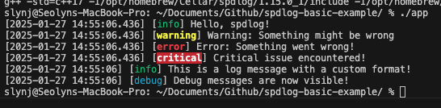

Fast Logging for C++ with spdlog¶
1. Installation¶
Install spdlog and the dependencies fmt and cmake. You can also install the header-only version or the compiled version separately instead of using the package manager.
2. Include Headers¶
spdlog/spdlog.h and spdlog/sinks/basic_file_sink.h are key header files of the spdlog library.
spdlog.h¶
This header file provides the core feature of the library. You can:
- Call basic logging functions like
spdlog::info,spdlog::warn,spdlog::error, etc. - Set the level of the log message (
trace,debug,info, etc) - Create an global logger.
- Format the log message.
example:
#include <spdlog/spdlog.h>
int main() {
spdlog::info("This is an info message.");
spdlog::warn("This is a warning message.");
spdlog::error("This is an error message.");
}
basic_file_sink.h¶
This header file provides the “sink” functionality needed to output logs to a file. In spdlog, the log output target is defined as a “sink,” allowing logs to be sent to different destinations like console, files, or networks.
Sink refers to the output target that determines where log messages should be sent. It acts as the “exit point” where log messages flow.
- Sink decides whether log messages are recorded to the console, files, etc.
- A single logger can have 1+ sinks → same log messages can be sent to multiple destinations simultaneously.
- Each Sink operates independently → you can format the messages and filter them for each sink.
example:
#include <spdlog/spdlog.h>
#include <spdlog/sinks/basic_file_sink.h>
int main() {
auto file_logger = spdlog::basic_logger_mt("file_logger", "logs/example.log");
file_logger->info("This message will be written to the file.");
file_logger->warn("This is a warning logged to the file.");
}
- The type for
file_loggerisstd::shared_ptr<spdlog::logger> - Since it’s a smart pointer, you can pass it as a parameter.
Example Code¶
#include <spdlog/spdlog.h>
#include <spdlog/sinks/basic_file_sink.h>
int main() {
spdlog::info("Hello, spdlog!");
spdlog::debug("This is a debug message");
spdlog::warn("Warning: Something might be wrong");
spdlog::error("Error: Something went wrong!");
spdlog::critical("Critical issue encountered!");
auto file_logger = spdlog::basic_logger_mt("file_logger", "logs/example.log");
file_logger->info("This message is logged to a file!");
spdlog::set_pattern("[%Y-%m-%d %H:%M:%S] [%^%l%$] %v");
spdlog::info("This is a log message with a custom format!");
spdlog::set_level(spdlog::level::debug);
spdlog::debug("Debug messages are now visible!");
return 0;
}
I created example.cpp with the code above, and used the Makefile below. Make sure to modify your spdlog, fmt paths. You can check using brew info <libName>.
CXX = g++
CXXFLAGS = -std=c++17 -I/opt/homebrew/Cellar/spdlog/1.15.0_1/include -I/opt/homebrew/Cellar/fmt/11.1.3/include
LDFLAGS = -L/opt/homebrew/Cellar/spdlog/1.15.0_1/lib -L/opt/homebrew/Cellar/fmt/11.1.3/lib -lspdlog -lfmt
TARGET = app
SRC = example.cpp
$(TARGET): $(SRC)
$(CXX) $(CXXFLAGS) $(SRC) -o $(TARGET) $(LDFLAGS)
clean:
rm -f $(TARGET)
Build and run the executable.
You should see the following output on the terminal, and also see that example.log was created.


Logging¶
spdlog::info("Hello, spdlog!");
spdlog::debug("This is a debug message");
spdlog::warn("Warning: Something might be wrong");
spdlog::error("Error: Something went wrong!");
spdlog::critical("Critical issue encountered!");
- Log messages in different levels are printed to the console.
- The basic level is set to info → if you log debug, you won’t be able to see it.
File Logging¶
auto file_logger = spdlog::basic_logger_mt("file_logger", "logs/example.log");
file_logger->info("This message is logged to a file!");
spdlog::basic_logger_mtcreates a file logger named “file_logger". It saves the logs in tologs/example.log(spdlogcreates it if it doesn’t exist).- Since
spdlog::basic_logger_mtis a shared pointer, you can call theinfomethod and log the message to the file.
Formatting¶
spdlog::set_pattern("[%Y-%m-%d %H:%M:%S] [%^%l%$] %v");
spdlog::info("This is a log message with a custom format!");
-
spdlog::set_patternsets the format for all the logs.format desc %Y-%m-%d %H:%M:%Sdate and time %^%l%$output log levels in colours.
(%I: log level,%^/%$: start / end colour)%vlog message content
Set Log Level¶
spdlog::set_levelsets the log level (global)